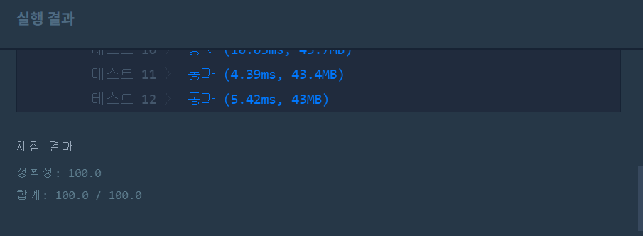

문제
https://programmers.co.kr/learn/courses/30/lessons/42841
( ᐛ )و 첫 번째 도전
1. 설계
- 3자리 숫자를 모두 생성해 스택에 저장한다.
- 스택에서 하나 뽑아서 baseball 숫자와 비교하여 카운트한 strike와 ball이 baseball배열값과 같은지 확인한다.
- 같다면 answer++후 다음 baseball숫자를 비교, 다르다면 다음 스택 값을 뽑는다.
2. 구현
import java.util.Stack;
/**
*
* @author HEESOO
*
*/
class Solution {
public void makeNum(Stack st){//중복없는 3자리 숫자 생성
for(int i=1;i<=9;i++){
for(int j=1;j<=9;j++){
for(int k=1;k<=9;k++){
if(i!=j&&j!=k&&k!=i){
st.push(String.valueOf(100*i+10*j+k));
}
}
}
}
}
public boolean check(String num, int[][] baseball){
String base="";
int strike=0, ball=0;
for(int i=0;i<baseball.length;i++){
base=String.valueOf(baseball[i][0]);
for(int j=0;j<3;j++){
if(num.charAt(j)==base.charAt(j)){//스트라이크 체크
strike++;
}
if(base.contains(String.valueOf(num.charAt(j)))){//볼 체크
ball++;
}
}
ball=ball-strike;//스트라이크와 볼은 겹치지 않으므로
if(strike!=baseball[i][1]||ball!=baseball[i][2]){
return false;
}
strike=0;
ball=0;
}
return true;
}
public int solution(int[][] baseball) {
int answer = 0;
Stack<String> st=new Stack<>();
String num;
boolean chk=false;
makeNum(st);
while(!st.isEmpty()){
num=st.pop();
if(check(num, baseball)){
answer++;
}
}
return answer;
}
}
public boolean check(string num, int[][] baseball)- String base: baseball의 비교할 숫자를 저장한다.
- int strike, ball: 스트라이크와 볼 수를 저장한다.
public int solution(int[][] baseball)- Stack
st: 1부터 9까지 중복없이 숫자를 조합해 스택에 저장한다. int형으로 저장하면 각 자리마다 비교하기 불편하므로 String으로 저장해 charAt()을 사용한다. - String num: 스택에서 pop()한 값을 저장하는 변수이다.
- boolean chk: check()메소드의 리턴값을 저장하는 변수이다.
- Stack
3. 코드 설명
public void makeNum(Stack st): 1부터 9까지 각자 서로 다른 숫자를 조합해 3자리 숫자를 만든다. for문을 3개 돌려서 i, j, k가 서로 같지 않을때 3자리 숫자로 만들고, 이를 String형으로 변환해 스택에 저장한다.public boolean check(String num, int[][] baseball): 처음 for문을 통해 baseball을 순회한다. base에는 현재 i행의 세자리 수를 저장한다.
두번째 for문에서는 num(스택에서 추출한 값)과 base(baseball에서 추출)의 스트라이크와 볼을 체크한다. 첫번째 if문은 스트라이크를 체크한다. 두 숫자의 현재 자릿수가 같다면 strike++한다. 두번째 if문은 볼을 체크한다. base에 num의 현재 자리의 숫자가 존재한다면 ball++한다.
스트라이크와 볼 계산이 끝났다면 ball에서 strike만큼 뺀다. 문제에서 스트라이크와 볼은 중복되어 계산하지 않았기 때문이다. num=”324”, base=”123”일 때, base가 num의 숫자를 포함하는 갯수는 2이지만(“3”,”2”) ball은 1로 저장한다. 왜냐하면 두번째 자릿수가 같은 것은 strike를 통해 1로 계산했기 때문이다.
이로써 최종 strike, ball이 확정되었으므로 baseball의 값과 같은지 비교, 하나라도 다르다면 다음 baseball을 확인할 가치도 없으므로 false를 리턴한다.
같다면 다음 비교를 위해 strike, ball을 초기화하고 다음으로 넘어간다.public int solution(int[][] baseball): 숫자들을 저장할 스택을 생성하고 makeNum()을 통해 가능한 숫자들을 모두 생성해 저장한다.
while()문을 통해 스택안의 값을 하나씩 뽑아서, check()를 통해 스택에서 뽑은 값과 baseball을 인자로 넘겨 스트라이크와 볼을 계산한다. true를 리턴받아오면 해당 num은 정답이 가능한 수이므로 answer++한다.
4. 결과
 성공٩(˘◊˘)۶
해결 완료!
처음 접근이 어려웠다. 다른 사람들은 어떻게 풀었는지 대충 읽어보고 이해한 후 거기에 맞춰서 코드를 작성했다. 코드 작성은 어렵지 않은데 코딩 방향을 생각해내는게 어렵다.
참고
- [프로그래머스 알고리즘] 2단계 숫자야구 -완전탐색 https://lkhlkh23.tistory.com/71
- BruteForceSearch programmers 프로그래머스 알고리즘 자바 ‘숫자야구’ 문제풀이 https://geehye.github.io/programmers-brute-force-search-04/#